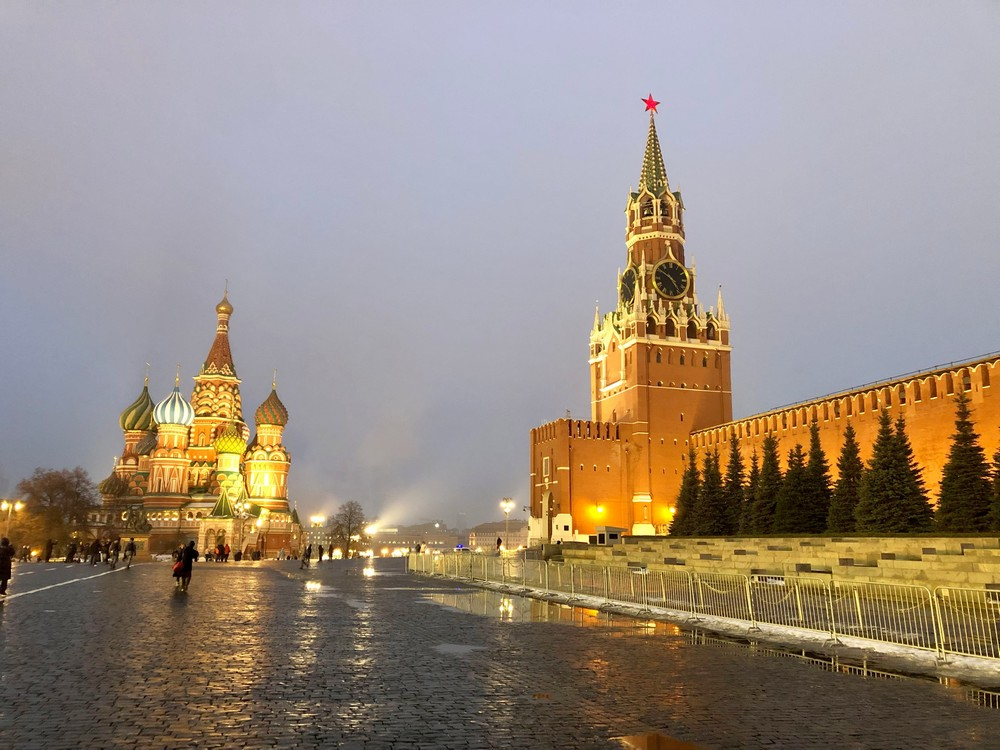
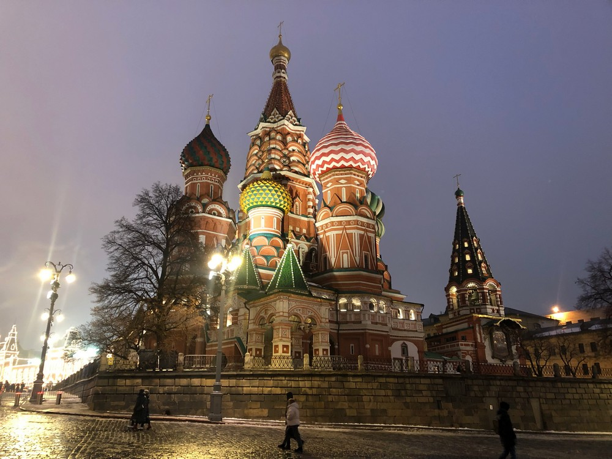
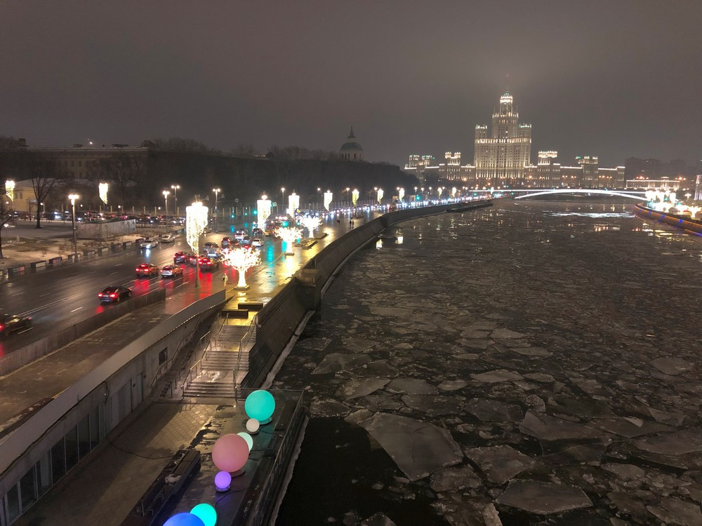
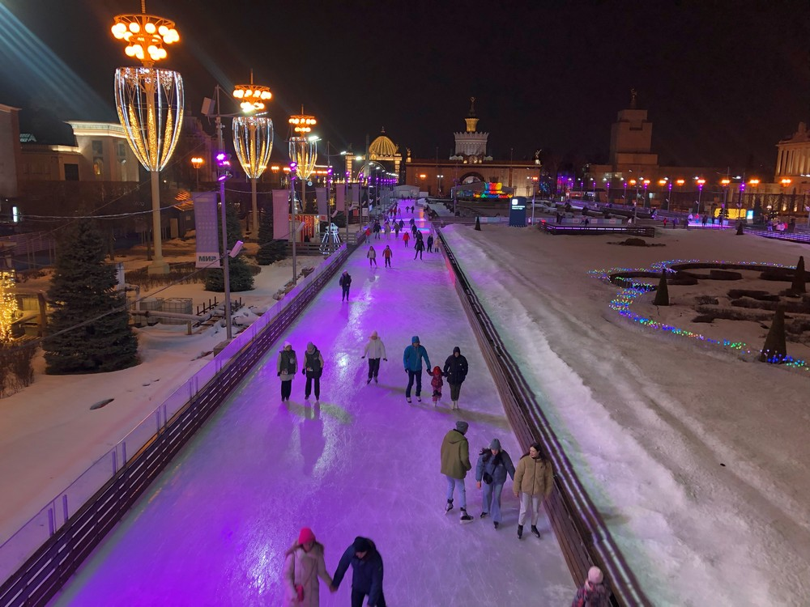
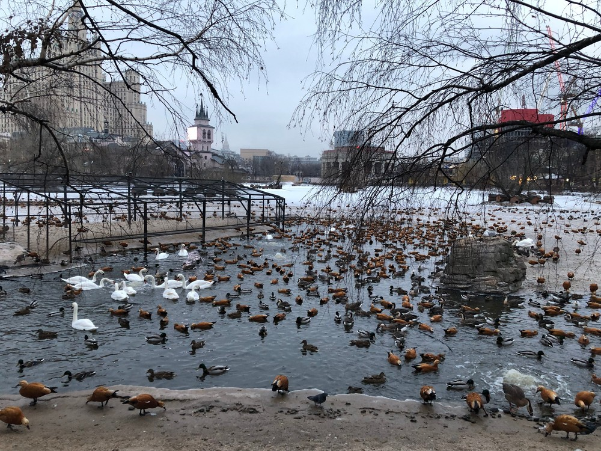

Здесь я расскажу немного о Москве и покажу фотографии, сделанные мною в поездке.
Москва - наша прекрасная столица! Согласно информации из Wikipedia®: Крупнейший по численности населения город России и её субъект — 13 097 539 человек (2023), самый населённый из городов, полностью расположенных в Европе, занимает 22-е место среди городов мира по численности населения, крупнейший русскоязычный город в мире. Центр Московской городской агломерации. Самый крупный город Европы по площади.
Москва начинается с Красной площади:)
Почему площадь называется Красной? Возможно, знают не все...
По поводу происхождение названия, наиболее традиционной является версия о том, что прилагательное «красный» использовалось в значении «красивый» (в русском языке это однокоренные слова). Предположение некоторых авторов о том, что слово «красный» означало «главный» этимологически неясно. Предположение Рачинского о том, что Красная площадь была названа так потому, что через неё пролегал путь в Кремль к Красному крыльцу комплекса построек царского дворца представляется необоснованным усложнением. Вместо этого, допустимо предположить, что переименование площади было связано с «повышением её статуса» от непритязательного рынка до места проведения военных парадов в честь встреч иностранных послов.
Храм Васи́лия Блаже́нного, официально собо́р Покрова́ Пресвято́й Богоро́дицы, что на Рву (также Покро́вский собо́р, собо́р Покрова́ на Рву) — православный храм на Красной площади в Москве, памятник русской архитектуры. Построен в 1555—1561 годах.
Вид на Москву-реку с Парящего моста парка "Зарядье"
Общественное пространство Москвы, городской культурно-просветительский центр «Зарядье» — объект в одноимённом историческом районе Москвы, созданный на месте снесённой в 2006 году гостиницы «Россия». Расположен на территории площадью в 13 га между Китайгородским проездом, улицей Варваркой и Москворецкой набережной.
Каток ВДНХ
Вы́ставка достиже́ний наро́дного хозя́йства (ВДНХ) (в 1939—1959 годах — Всесою́зная сельскохозя́йственная вы́ставка (ВСХВ), в 1959—1992 годах — Вы́ставка достиже́ний наро́дного хозя́йства СССР (ВДНХ СССР), в 1992—2014 годах — Всеросси́йский вы́ставочный центр (ВВЦ)) — выставочный комплекс в Останкинском районе Северо-Восточного административного округа города Москвы, крупнейший выставочный комплекс в городе. Входит в 50 крупнейших выставочных центров мира. Ежегодно ВДНХ посещают 30 млн гостей. 1 августа 2019 года выставка отпраздновала 80-летний юбилей.
Птицы в Московском зоопарке
Моско́вский зоопа́рк - один из старейших зоопарков (1864) в Европе и пятый по площади зоопарк России после зоопарков Ярославля, Ростова-на-Дону, Новосибирска и Красноярска. Входит в десятку самых посещаемых зоопарков мира (до 3,8 млн человек в год). В коллекции зоопарка 1267 видов животных, 10531 особей. Имеет статус головного зоопарка России, штаб-квартира Евро-азиатской ассоциации зоопарков и аквариумов. Активный участник международных проектов по поддержанию и изучению видов в дикой природе (реабилитация и реинтродукция), разведению редких видов животных в неволе.